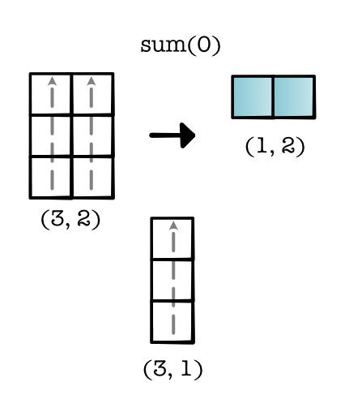
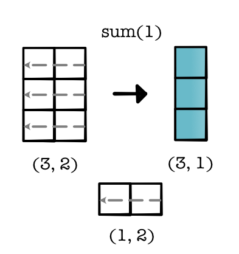
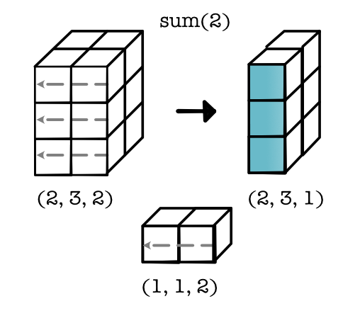
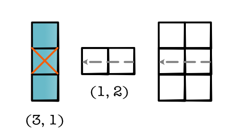
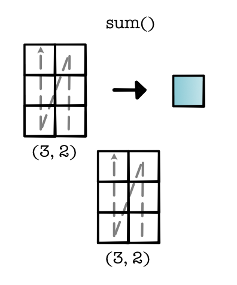

Operations¶
Now we would like to reimplement all our mathematical operations on tensors. The goal is to make this feel simple and intuitive to users of the library. We can break these operations down as unary transformations:
# a) Return a new tensor with the same shape as `tensor_a` where
# each position is the log/exp/negative of the position in `tensor_a`
tensor_a.log()
tensor_a.exp()
-tensor_a
...
Binary transformations:
# b) Return a new tensor where each position
# is the sum/mul/sub of the position in `tensor_a` and
# `tensor_b`
tensor_a + tensor_b
tensor_a * tensor_b
tensor_a - tensor_b
...
And reductions:
# c) Return a new tensor where dim-1 is size 1 and represents
# the sum/mean over dim-1 in `tensor_a`
tensor_a.sum(1)
tensor_a.mean(1)
...
Core Operations¶
We could implement each of these operations individually, but we can also be a bit lazy and note the structural similarities. If we squint, these operations look very much like the higher-order functions that we implemented in Module 0 - Fundamentals:
Operation a / map: These operations just touch each of the positions in the tensor individually. They don't need to deal with other positions or know anything about the shape or size of the tensor. We can view these operations as applying the following transformation:
Operation b / zip: These operations only need to pair operations between input tensors. If we assume the tensors have the same size and shape, this type of operation simply aligns these two tensors and applies an operator to each pair of elements:
Operation c / reduce: These operations need to group together cells within a single tensor. We can think of there being an implied reduce shape that is eliminated in the process of the output construction. For instance, in the example below, we start with an input of shape (3, 2) and create an output of shape (1, 2). Implicitly, we reduce over a ternsor of shape (3, 1) for each element in the output.
Reductions¶
Reduction is a bit more complex than the others, so lets discuss how it is implemented.
Reductions can specify an dimension (or axis) that tells us which elements to reduce. The reduction is then applied along that dimension. For example if we reduce dimension 0 we get the following reduction.
This reduction changes our shape from (3, 2) to (1, 2), i.e. reducing the size of 0-dim. Another way you can view this is as 2 parallel operations, both of which apply a Module-0 style reduce along the 0-dim. We can look at the reduction shape of this procedure (3, 1).
Applying a reduction along dim 1 creates a different reduction shape which is applied 3 times. Here is what that looks like,
The same approach can be applied in higher dimensions. If we want to sum over one of the dimensions we just create the reduction shape and apply it,
When you implement, think about enumerating over positions in the final tensor, and then applying the reduction shape to get the indices over the original tensor,
Finally, there is a special case reduction where we reduce over the entire tensor. You can think of this as creating a reduction shape over the full tensor and then viewing the result as a scalar.
In the next module, we will discuss efficient implementation of the above operations. For now, they can be implemented by slow but correct loops over all elements in the input tensors. This approach can be used to implement key tensor operations, without doing more than implementing the above higher-order functions.